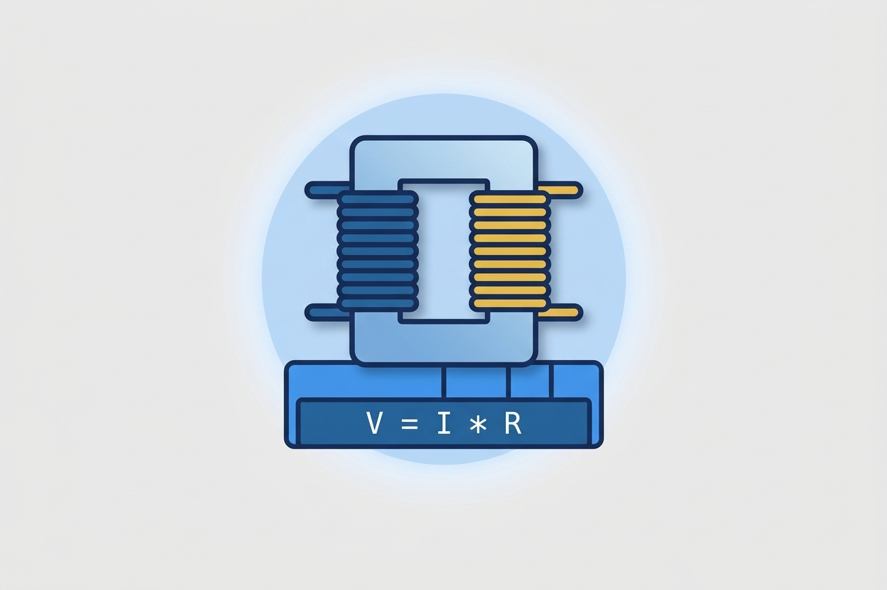
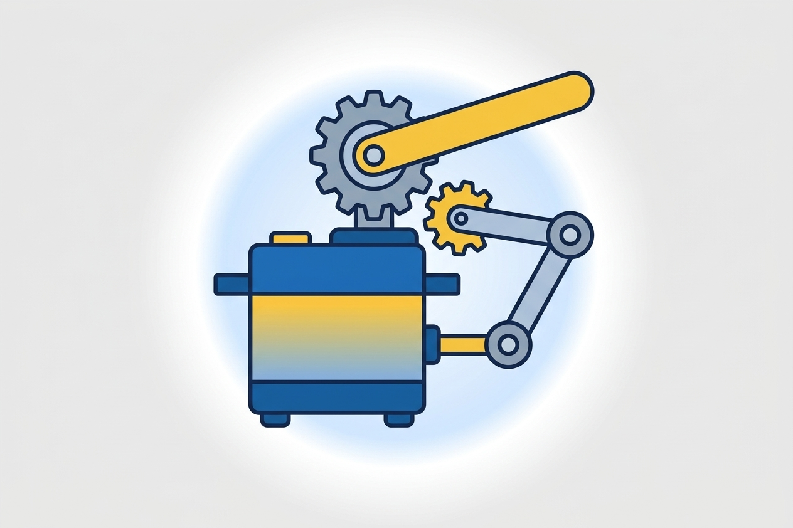
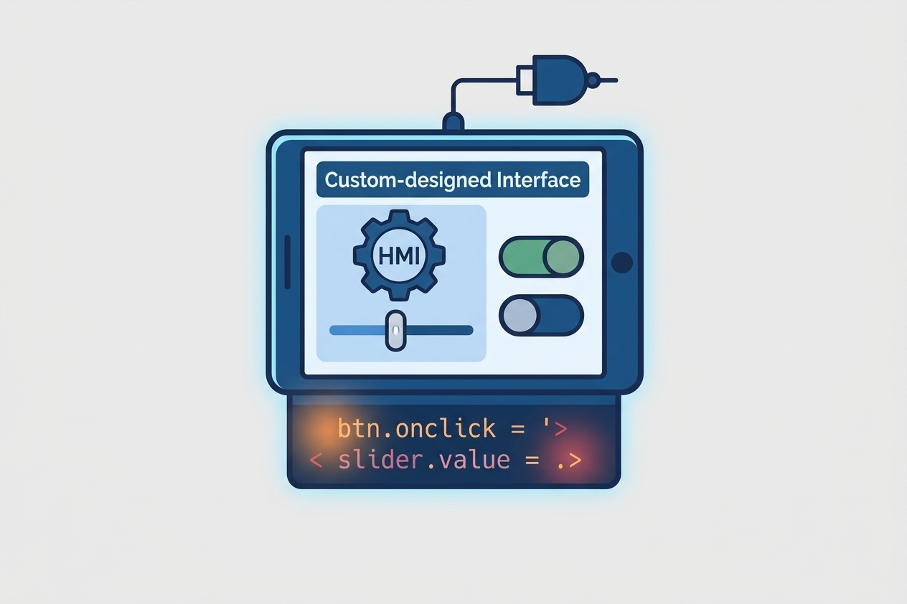
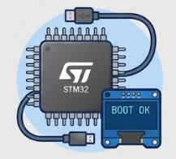

En la Institución Educativa Técnico Superior, la especialidad en Automatización de Sistemas Mecatrónicos Industriales capacita a los estudiantes en electrotecnia, electrónica analógica y digital, servomecanismos y programación de sistemas automatizados.
Preparamos técnicos integrales capaces de diagnosticar, programar e implementar sistemas mecatrónicos mediante la integración de circuitos y componentes mecánicos para optimizar procesos industriales.
Saber más
Grado Décimo (IHS: 3 | 120 horas): Estudio de circuitos eléctricos, análisis de corriente, voltaje y leyes aplicadas a sistemas mecatrónicos.

Grado Décimo (IHS: 3 | 120 horas): Fundamentos de componentes discretos, amplificadores operacionales y compuertas lógicas digitales.

Grado Décimo (IHS: 3 | 120 horas): Análisis y control de sistemas de movimiento, motores paso a paso, servomotores y mecanismos de realimentación.

Grado Décimo (IHS: 2 | 80 horas): Representación gráfica normalizada de planos mecánicos, esquemas eléctricos y diagramas de control.

Grado Undécimo (IHS: 3 | 120 horas): Desarrollo de software e interfaces para la supervisión y control de procesos automatizados.

Grado Undécimo (IHS: 4 | 160 horas): Arquitectura, programación en lenguaje C/Assembly y aplicación práctica de sistemas embebidos.

Grado Undécimo (IHS: 4 | 160 horas): Implementación de lógica industrial, autómatas programables (PLCs) y optimización de celdas robotizadas.

Técnico capacitado para diagnosticar, programar e implementar sistemas mecatrónicos orientados a la optimización de procesos industriales.
Equipo de Desarrollo: Julia Bolivar Cruz, Jose Jair Devía , Camila Andre Solano , Eddie Santiago Marín , Breiner Mateo Restrepo.
Institución Educativa Técnico Superior — Neiva, Huila